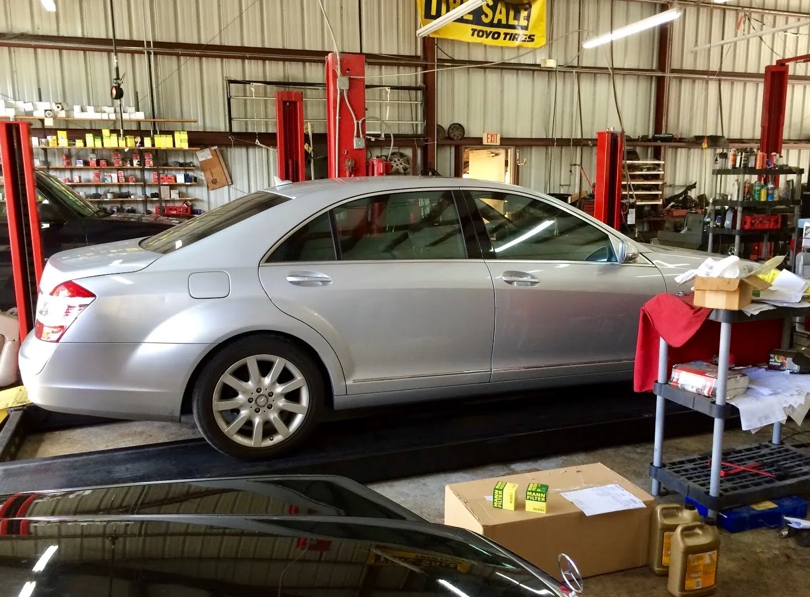

Home / Contact
Contact
Find us on
Philips Hwy.
Call, book online, or swing by the shop in the Bayard area of Jacksonville.
Bayard Auto Center
(904) 400-410012569 Philips HwyJacksonville, FL 32256Mon–Fri 8 AM–6 PM
| Monday | 8 AM – 6 PM |
|---|---|
| Tuesday | 8 AM – 6 PM |
| Wednesday | 8 AM – 6 PM |
| Thursday | 8 AM – 6 PM |
| Friday | 8 AM – 6 PM |
| Saturday | Closed |
| Sunday | Closed |
FAQ
Good to know.
What are Bayard Auto Center’s hours?
Monday through Friday, 8 AM to 6 PM. The shop is closed Saturday and Sunday.
Do I need an appointment?
Yes. The shop’s Google listing notes that an appointment is required. You can book online any time or call (904) 400-4100.
Where is the shop?
12569 Philips Hwy, Jacksonville, FL 32256, in the Bayard area of Jacksonville’s Southside.
What services do you offer?
Computer diagnostic scans, engine and transmission, heating and cooling, electrical and electronic, alignment, brakes, tires, inspections and oil changes.
What forms of payment do you accept?
Credit cards, debit cards and NFC mobile payments.
Do you offer financing?
Bayard Auto Center links customers to Snap Finance. You can apply online with Snap; approval and terms are set by Snap Finance.
Is the shop wheelchair accessible?
Yes. The Google listing shows a wheelchair-accessible entrance, parking lot and restroom.